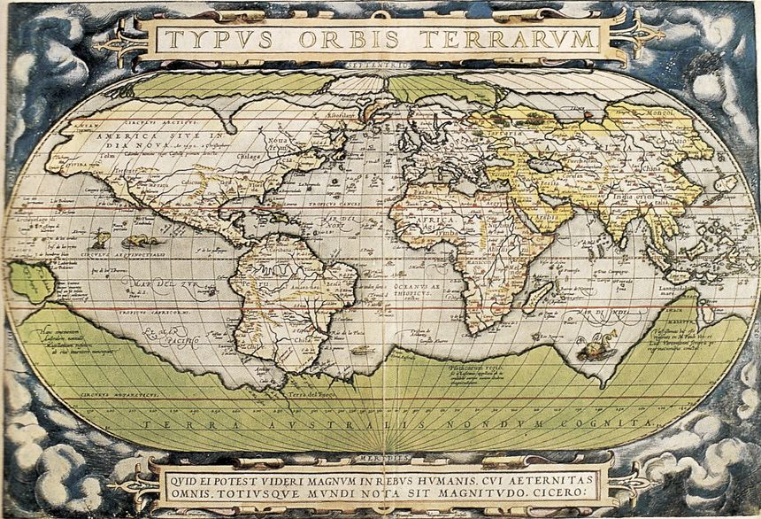

Période Moderne
Introduction
La période moderne, qui s'étend du XVIe au XVIIIe siècle, est marquée par des avancées majeures en cartographie. Avec l'amélioration des instruments de navigation et des techniques de projection, les cartes deviennent plus précises et détaillées.
Les premières cartes du monde moderne
Grâce aux grandes explorations, les cartographes de l'époque ont commencé à représenter le monde de manière plus précise, incorporant de nouvelles terres découvertes et affinant les détails géographiques des continents.
Carte du monde réalisée par Abraham Ortelius en 1570, l'une des premières à représenter les continents dans une projection cohérente basée sur les découvertes des navigateurs.
L'importance d'Abraham Ortelius
Ortelius est reconnu comme l'un des pionniers de la cartographie moderne. Son atlas, Theatrum Orbis Terrarum, publié en 1570, est souvent considéré comme le premier atlas moderne, compilant diverses cartes en une seule œuvre cohérente.
Projections et techniques cartographiques
Les progrès en mathématiques et en astronomie ont permis l'utilisation de projections plus précises, telles que la projection de Mercator, qui est devenue la norme pour la navigation maritime.
Conclusion
La période moderne a permis de poser les bases de la cartographie scientifique en utilisant des méthodes de plus en plus rigoureuses. Ces avancées ont ouvert la voie aux explorations futures et à la cartographie contemporaine.